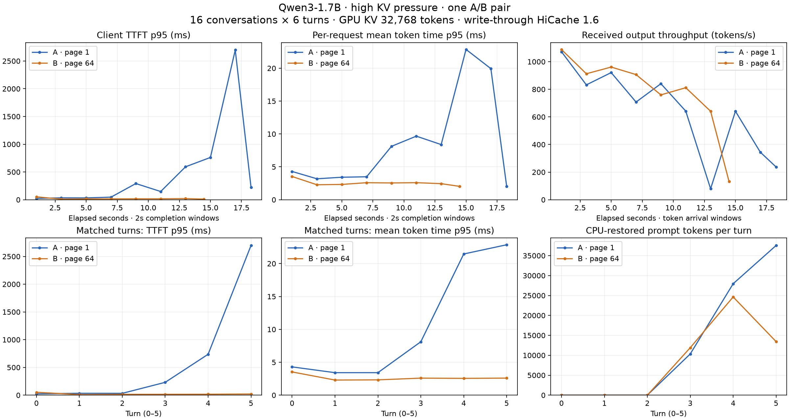

One A/B pair · Qwen3-1.7B · 16 conversations × 6 turns · 96 successful requests each · both runs evicted GPU cache and restored CPU cache.
A: page 1 timeline + metricsB: page 64 timeline + metrics
| Metric | A · page 1 | B · page 64 | Change |
|---|---|---|---|
| Successful requests | 96 / 96 | 96 / 96 | No errors |
| Late-turn TTFT p95 | 2,502.49 ms | 20.73 ms | 99.17% lower |
| Overall TTFT p95 | 761.9 ms | 20.73 ms | 97.3% lower |
| Late-turn mean time per output token | 10.56 ms | 2.33 ms | 77.9% lower |
| Whole-run output throughput | 662.8 tokens/s | 821.1 tokens/s | 23.9% higher |
| Elapsed workload time | 18.54 s | 14.96 s | |
| Last-scrape GPU evictions | 92,200 tokens | 66,112 tokens | Both evicted |
| Last-scrape CPU → GPU restores | 76,088 tokens | 49,984 tokens | Both restored |
Late turns = 4–5 (zero-based). Single-run evidence, not a universal guarantee. Server-generated RNG seeds differed; 85/96 output hashes matched; input construction, context lengths, requested tool delays, and output lengths matched. Token timing is client-observed, not kernel timing. No trace-based claim about the underlying kernel or synchronization cost.
